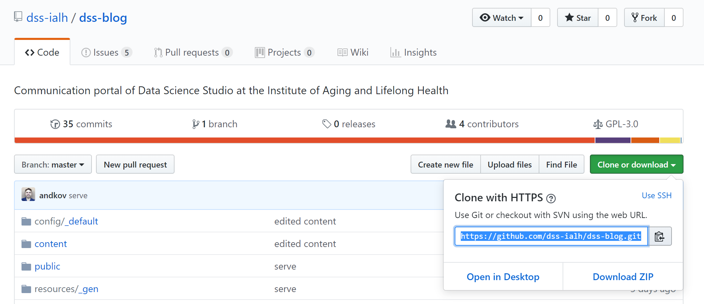
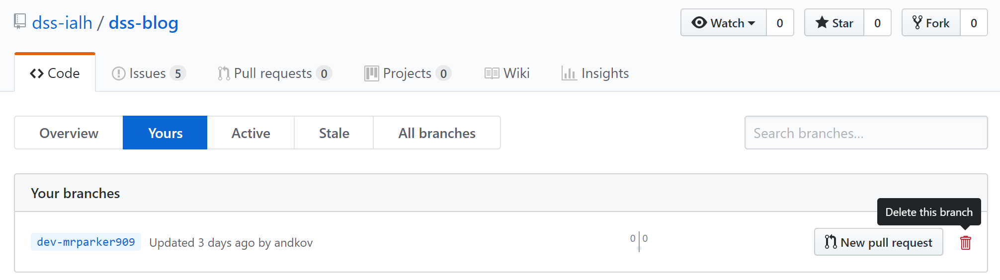

This is a guide detailing how you can deploy your article to be featured on the DSS Blog. All posts are peer reviewed by two members of the DSS editorial team. Whether you are a new member, part of the editorial team, or an Acting Admin, this guide will serve as a road map for blog posts.
Adding a New Post
Please note that this post assumes that you have:
- a github account
- installed the R package “blogdown”
- a working personal blog site (eg: Andriy Koval’s Blog)
- R Studio
- git installed and configured for R Studio
An alternative to using git integrated with R is to use Github Desktop with R instead. This guide will show you the git and R method, but feel free to use any method you are comfortable with, so long as you are able to: Clone and Pull from Github, Create new branches, Commit changes, and Push back to Github.
Blog Authors
- Create a new post on your website (this is your full blog post)
If this is your first time posting: clone dss blog site from github:
Copy the repo URL: https://github.com/dss-ialh/dss-blog.git

Create a new project in R Studio using the repo

- Pull in R Studio, so you have the up to date dss blog site

- Create a new branch for the dss blog site called: dev-mygithubname (with mygithubname replaced with your github name…)

- Create a new post in your new dev branch, following the New Post Template below (this is a summary of your new blog post, with a link to your full blog post)

- Commit only the new .Rmd file for your post (under “content/post/my_new_post.Rmd”) and any necessary image and data files under “static/img/my_github_user_name/”, and then Push to github

- Create a New pull request via github (online), ask for help the first time

- flag two reviewers, they will check the post and make comments/suggestions (choose reviewers from the DSS Blog Editorial Board)
- Include a link to full blog post in your pull request
- Wait for review, and make any requested changes
- flag two reviewers, they will check the post and make comments/suggestions (choose reviewers from the DSS Blog Editorial Board)
After the branch has been merged, you can delete your dev-mygithubname branch on github.

New Post Template
Required Components
- Summary Image
Use image template for uniformity of all posts, save in “./static/img/my_github_user_name/my_post_header_image.png”) - Summary Text
(1 paragraph, abstract style) - Summary Link a link to the full blog post
Create Summary Image From Template
- Use the DSS powerpoint template to generate a summary image, save as a .png
- download from: DSS Blog Github

- Edit the header to include images and text as necessary for your header
- Ensure the DSS logo remains visible
- Export the image as a .png file
- Place the image into “./static/img/my_github_user_name/my_post_header_image.png”
- Insert the image into the blogpost using the yaml header (under the header section)
image: “../../img/my_github_user_name/my_post_header_image.png”
Create Summary Text and Link
- Write your summary in the style of an abstract if possible.
- The summary can be as long as you wish, but only the first few sentences will appear in the blog preview, and so keeping it shorter is better.
- The maximum number of words that will display is 60, anything more will be replaced with ‘…’ in the preview.
- Include a link back to your full blog post like this:

Editorial Team
We would like to keep the review process as expedient as possible. If you are flagged as a reviewer but do not have the time, you may request that a second reviewer take your place (or let the blog poster know how long to expect before you will be able to provide feedback).
Flagged as Reviewer
When you are flagged (through github) to be a reviewer:
- Review the full blog post and the blog summary, keeping in mind:
- relevance to Data Science
- content quality (formatting, links, data sources, etc)
- clarity of communication
- accuracy of information
- summary image uses image template
- references and acknowledgements of source materials (where applicable)
- avoiding duplication of blog post topics unless material is sufficiently updated, improved, or different in context
- leave a comment on the pull request indicating any changes required, suggestions, and comments
- conclude your review on github, indicating that you have reviewed the post and are satisfied it is ready for posting
- The last person to give approval for publication must request the Acting Admin to Merge, and serve the updated version of the site (use a comment on the pull request
eg: “@acting_admin_github_name, this post has been approved for publication, merge at your earliest convenience”).
Acting Admin
Merge Request
When you receive a Merge request (on github) from the post reviewers:
- Complete the merge request
- Pull the site
- Serve the site
- Push the site
- Check that the new post is now accessible from the online site